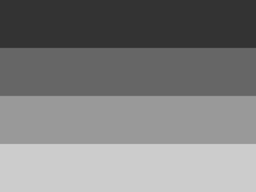
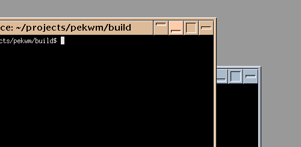

0.2.0 theme updates
pekwm-0.2.0 will bring a couple of noticeable improvements to the theme system including:
- Backgrounds
- ColorMaps
- Variants
This post will describe what these features do and how to use them.
Backgrounds
It is now possible to set the background with the theme using the new Background section in the theme file. All pekwm textures are supported including the new LinesVert and LinesHorz textures. For a full list of textures, see the themes documentation. Image textures are loaded from the backgrounds folder within the theme directory.
An example background section is shown below together with the generated background image. The background will use 25% of the available screen height for each line.
Background {
Texture = "LinesHorz 25% #333333 #666666 #999999 #cccccc"
}

For users who want to set the background self the background setting can be disabled in the main configuration file under the Screen section:
Screen {
ThemeBackground = "False"
}
ColorMaps
For theme developers ColorMaps has been added which allows for changing/mapping the colors of images used in themes. The intended use for this is to support creating themes with fever images and also support creating variants of themes using the same images.
A syntax example:
ColorMaps {
ColorMap = "WhiteToBlack" {
Map = "#ffffff" { To = "#000000" }
}
}
For the first use-case, creating themes using less images, let us consider the NeoMotif theme by Paulo Silva. This theme had 29 images, 3 for each button and a focused and unfocused variant for the title and borders. I changed this theme to use ColorMaps for the unfocused, pressed and hoover state and now it only require 13 images in total. One of the major benefits of this approach apart from making themes smaller, is creation time. Lets say a button icon is to be updated or added, only one image needs to be created and the images for the different states will come for free as soon as the ColorMap has been defined and used.
The ColorMap for the NeoMotif theme looks like this:
ColorMaps {
ColorMap = "Unfocused" {
Map = "#DDBB99" { To = "#AABBCC" }
}
ColorMap = "Hoover" {
Map = "#DDBB99" { To = "#FFCCAA" }
}
ColorMap = "Pressed" {
Map = "#FFFFFF" { To = "#000000" }
Map = "#000000" { To = "#FFFFFF" }
Map = "#DDBB99" { To = "#FFCCAA" }
}
}
And the Shade button went from this:
Right = "Shade" {
Focused = "Image button_shade.xpm"
Unfocused = "Image button_shade_unf.xpm"
Hoover = "Image button_shade.xpm"
Pressed = "Image button_shade_pr.xpm"
Button = "1" { Actions = "Toggle Shaded" }
}
To:
Right = "Shade" {
Focused = "Image button_shade.xpm"
Unfocused = "ImageMapped Unfocused button_shade.xpm"
Hoover = "ImageMapped Hoover button_shade.xpm"
Pressed = "ImageMapped Pressed button_shade.xpm"
Button = "1" { Actions = "Toggle Shaded" }
}
Less images and the buttons now change color on hovering.

Variants
The last new feature mentioned in this post is theme variants which allows for bundling of related themes into a single themes folder. An example of this is the ion-p which comes with the default cleanice color scheme and also the dark scheme.
Theme variants are just new theme files but with a -name suffix.
In the ion-p example both variants share the same theme definition in a template file but have the colors defined in the variant file before the main theme is included like this:
# lots of more colors defined here
$COLOR_STATUS_BG="#ffffff"
$COLOR_STATUS_TEXT="#000000"
INCLUDE = "$THEME_DIR/template"